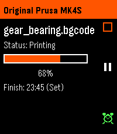
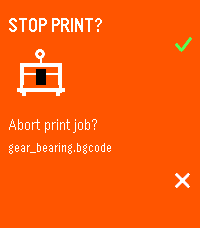
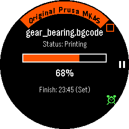
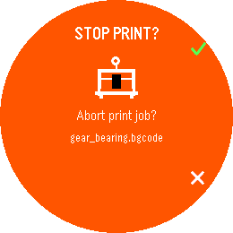

Prusa Connect for Pebble — Setup Manual
Summary: This manual provides comprehensive setup instructions for connecting your Pebble smartwatch directly to Prusa Connect using your personal OAuth2 Refresh Token.
1. Overview
Prusa Connect for Pebble is an open-source smartwatch application that connects Pebble smartwatches to Prusa Connect. It displays real-time telemetry from active 3D printing jobs directly on your wrist, allows remote pausing and aborting of prints, schedules local wake-up vibration alarms, and syncs print estimates to your Pebble Timeline.
Supported smartwatch platforms:
- Pebble Time 2 (Emery): 200 × 228 rectangular 64-color display.
- Pebble Time Round 2 (Gabbro): 260 × 260 circular 64-color display with curved top header arc.
- Pebble Time / Pebble Time Steel (Basalt): Color rectangular display.
Supported 3D printers:
- Original Prusa MK4, MK4S, XL, MINI, MINI+, and MK3/MK3S+ (via PrusaLink / Prusa Connect).
2. Prerequisites
Before configuring the application, ensure you have:
- A registered account on connect.prusa3d.com with at least one active 3D printer.
- The Pebble (or Rebble) companion app installed on your smartphone (Android or iOS).
- The Prusa Connect watchapp installed on your Pebble smartwatch.
- Access to a desktop web browser (Chrome, Firefox, Edge, Safari, Brave) to copy your authentication token.
3. Step 1: Retrieve Your Refresh Token
Prusa Connect uses OAuth2 authentication. You can extract your personal session refresh token directly from your browser session in seconds without entering your password into third-party software.
Method A: Browser Console (Recommended)
- Open your web browser on your computer and log in to connect.prusa3d.com.
- Open Developer Tools by pressing F12 (or Ctrl + Shift + I on Windows/Linux, Cmd + Option + I on macOS).
- Click the Console tab.
- Paste the following command and press Enter:
copy(localStorage.getItem('auth.refresh_token'))Your browser will copy the full refresh token directly to your clipboard. If you want to print the token on screen instead of copying to clipboard, execute:
localStorage.getItem('auth.refresh_token')Method B: Network Tab (Fallback)
If your browser blocks programmatic clipboard access:
- While logged in to connect.prusa3d.com/app/, press F12 and switch to the Network tab.
- In the filter input, type
token. - Reload the page (F5 or Ctrl + R).
- Click on the request to
https://account.prusa3d.com/o/token/. - Under the Response tab, locate and copy the string value inside
"refresh_token": "...".
Token Format: The refresh token is an encoded JWT string starting with eyJhbGci....
4. Step 2: Configure the Mobile App
Once you have copied the token:
- Open the Pebble (or Rebble) companion app on your phone.
- Navigate to the Apps (Watchapps) list.
- Locate Prusa Connect and tap the Settings button (gear icon).
- Paste your copied token into the Prusa Refresh Token text field.
- Tap Save & Connect.
The companion app immediately transmits the token to PebbleKit JS, which initiates an OAuth2 token exchange with Prusa's account server (account.prusa3d.com).
5. Step 3: Smartwatch Verification
Upon successful authentication, the watch interface transitions from "Setup Required" to the active print monitoring view.




The main screen presents:
- Printer Name: Highlighted in Prusa Orange (arced along the top bezel curve on Gabbro).
- File Name: The active gcode / bgcode job being printed.
- Status Label: Current printer state (Printing, Paused, Stopped, Finished, or Idle).
- Progress Bar: Visual percentage indicator in Prusa Orange.
- Estimated Finish Time: 24-hour clock estimate, with
(Set)indicator if reminder alarm is armed. - Action Cues: Hardware button icons along the right edge.
6. Hardware Watch Controls
Physical button assignments on the watch:
| Hardware Button | Printer State | Action & Destination Screen |
|---|---|---|
| UP | Printing / Paused | Opens the Emergency Stop confirmation screen. Press UP again to send STOP_PRINT command. |
| UP | Idle / Stopped | Requests an immediate telemetry refresh. |
| SELECT (Center) | Printing | Opens the Pause Print confirmation screen. Press UP to confirm PAUSE_PRINT. |
| SELECT (Center) | Paused | Opens the Resume Print confirmation screen. Press UP to confirm RESUME_PRINT. |
| DOWN | Any State | Toggles the Completion Alarm. Arms a local Pebble WakeUp reminder scheduled for the estimated completion time. |
| BACK | Confirmation Screen | Cancels command and returns to Main Monitoring Screen. |
| BACK | Main Screen | Exits to the watchface. Background polling continues on your phone. |
7. Architecture & Security
The application is designed for direct, end-to-end communication:
- No Intermediate Servers: All network traffic originates directly from your smartphone via PebbleKit JS. Requests are sent straight to official Prusa endpoints (
account.prusa3d.comandconnect.prusa3d.com). No third-party relays, analytics, or middleware proxies are involved. - No Stored Passwords: The application never handles or stores your Prusa account password.
- OAuth2 Refresh Token Rotation: Whenever the companion app refreshes session credentials, Prusa issues a fresh refresh token. The app saves this rotated token locally in your smartphone's persistent storage (
localStorage), preserving continuous connectivity without re-login. - Pebble Alloy (Moddable XS) on Watch: The embedded watch application runs via Moddable XS embedded JavaScript runtime, communicating with the phone over Pebble AppMessage.
8. Troubleshooting & Frequently Asked Questions
The watch displays "Setup Required" after entering my token.
This occurs if the refresh token was incomplete, expired, or contained extra whitespace. Repeat Step 1 using the copy(localStorage.getItem('auth.refresh_token')) one-liner in your browser console, paste it into Settings in the Pebble app, and press Save & Connect.
Does the completion reminder alarm ring if the watchapp is closed?
Yes. When armed, the app registers a native hardware WakeUp event with Pebble OS. Even if the watchapp is closed and you are on a watchface, Pebble OS will launch the app and trigger a continuous vibration pattern when the scheduled finish time arrives.
How does the Pebble Timeline integration work?
When an active print is detected, the phone companion app pushes a Timeline pin to your Rebble Timeline for the estimated finish timestamp, complete with a 5-minute pre-completion warning alert. If the print is paused, stopped, or finishes early, the pin is automatically updated or removed.
How can I revoke access or disconnect the app?
You can revoke access immediately by logging out of your account on connect.prusa3d.com (which invalidates the refresh token), or by clearing the token field in the Pebble app settings.
What if I have multiple 3D printers connected to my account?
The companion app queries the printer list endpoint (/app/printers) and automatically selects the printer that is currently active (Printing or Paused). If none are printing, it monitors your primary registered printer.